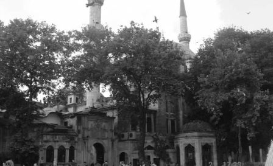

Bütün bu türbeler ve kabirler arasında bir hayli mescitler de vardır. Bunlardan bazıları harap olmuş, bazıları da kapatılmıştır.
1. Arpacı Hayrettin mescidi, İstanbul’da yapılmış olan mescitlerin en eskisidir. Tarihi bir kıymeti haizdir. Eyüp halkı tarafından bu mescide karşı çok büyük bir hürmet gösterilir. Bu hürmet zaman ile o derece artmıştır ki, çocuğu olmıyan kadınlarla muratlarının hâsıl olmasını isteyenlerin, kapıdaki halkalara sarılması kâfi geleceğine dair batıl itikatlara sebebiyet vermiştir.
Bunlardan başka, şu mescitler de az çok tarihi kıymeti haizdir.
2. Harap Mescit yerlilerin rivayetlerine nazaran bu mescit Fatih’in hayır eserlerinde çalışan demirci Çingenelerin namaz kılmaları için inşa edilmiştir.
3. Cevri Kalfa Mescidi.
4. Kızıl Mescid: Kiremitçi Süleyman Ağa isminde bir zat tarafından yaptırılmıştır. Yanında, harap bir mektep binası ile Süleyman Ağa’nın kabri vardır.
5. Saçlı Abdulkadir Mescidi: Bu zat, aslen Konya’nın Beyşehir asilzadelerinden ve Nakşibendi tarikatı şeyhlerindendir. Afşar aşireti Türkmenlerinden olup Beyşehir gölü kenarlarındaki meşhur Afşar bağlarının sahibi olduğu da rivayet edilmektedir.
6. Şah Sultan Mescidi: Aynı isimdeki tekkeye bitişiktir. Yavuz Sultan Selim’in kızı Şah Sultan tarafından yapılmış olan bu tarihi mescid, tamamiyle harap bir haldedir.
7. İslam Bey Mescidi: Bu harap mescid de, Kanuni Sultan Süleyman’ın saray erkânından İslâm Bey tarafından inşa ettirilmiştir.
8. Balî Baba Mescidi: Kadıasker Bali Efendi tarafından yaptırılmış olan mescide halk tarafından bu isim verilmiştir.
9. Eski Yeni Mescidi: Bu mescid, Kasım Çavuş isminde bir zat tarafından bina edilmiştir. Bu da harap bir haldedir.
10. Evlice Baba Mescidi: Fatih’in yazı hocası Validdin Efendi tarafından bina edilmişti.
11. Sofular Mescidi: Sultan imamı Saadeddin Efendi tarafından yaptırılmıştır. Zekai Dede sokağının başındadır.
12. Nişancı Mustafa Paşa Mescidi.
13. Baba Haydar Mescidi.
14. Şeyh Murat Mescidi: Bunun yanında, bânisinin dergâhı ile türbesi vardır.
15. Mehmet Efendi Mescidi: Defterdar tarafındadır. Şahit Mehmet Efendi tarafından yaptırılmıştır. Bu zat vefat ettikten sonra, yazı yazdığı kalem ile hokka, mescidin minaresine asılmıştı. Kalem, şiddetli bir lodos fırtınasından sonra kaybolup gitmiştir. Lâkin hokka, daha hâlâ asıldığı yerdedir.
16. Abdulvedûl Mescidi: Halk, evliyaullahtan olan bu zatın kerametine kaildir. Türbesi, birçok ziyaretçiler tarafından hemen her gün ziyaret edilir. Mescidin yanında bulunan türbesi, harap bir haldedir.
17. Silahtar Mescidi: Tamamiyle harap olmuştur.
18. Cezeri Kasım Mescidi.
19. Takkeci Mescidi: Eskiden başa giyilen ve arakiye denilen bir nevi serpuş vardı. Bu mescidi de arakiyeci esnafının kâhyası Cafer Çelebi isminde bir zat yaptırmıştır.
20. Mustafa Paşa Mescidi: Mustafa Paşa, eski veziriazamlardandır. Bu mescidi hayatta iken yaptırmıştır. Kendisi, padişahın emri ile katledilmiştir. Bunun için bu mescide de maktül Mustafa Paşa mescidi denilmektedir. Mescit şimdi, harap bir haldedir.
21. Nazperver Mescidi: Saray kadınlarından Nazperver kalfa tarafından bina edilmiştir. Şimdi, harap bir haldedir.
22. Davud Ağa Mescidi: Eski mimarbaşılarından Davud Ağa tarafından pek metin halde bina edilmiştir. Bugüne kadar mevcudiyetine muhafaza etmektedir.
23. Münzevi Mescidi: Sarayın karcıbaşılarından Süleyman Ağa tarafından bina edilmiştir.
24. Hacı Ali Paşa Mescidi: Bu mescidin, ikinci Sultan Hamid’in başmabeyincisi Hacı Ali Paşa tarafından bina edildiği rivayet olunmakta ise de mescidin mimari tarzına nazaran bina bir hayli eskidir. Her halde, başka bir Hacı Ali Paşa tarafından inşa ettirilmiş olsa gerekir.
25. Aşçıbaşı Mescidi: Sarayın aşçıbaşılarından Bolulu Hacı Mustafa Ağa tarafından yaptırıldığı rivayet edilmektedir. Bu mescit de, diğerleri gibi harap bir haldedir.
Bu mescitlerden başka, Eyüp’te oldukça tarihi ehemmiyeti olan bir camii de vardır.
Bu camii, Zal Mehmet Paşa tarafından yaptırılmıştır. Gerek camiin ve gerek yanındaki medresenin mimarı, meşhur Mimar Sinan’dır. Bu itibarla tarihi bir kıymet kazanmaktadır. Bu caminin avlusu çok geniştir.
Feshane caddesine kadar uzanıp gitmektedir. Bunun için caddenin o kısmına Zal Paşa Caddesi denilmektedir. Medresenin bir kısım hücreleri, bu cihettedir. Evkaf idaresi tarafından ihmal edilmiş olduğu için, medresenin bütün odaları, bir takım fakirler, kimsesizler ve serseriler tarafından işgal edilmiştir.
Eyüp’te bulunan tarihi camilerden biri de Ümmühani Hatun Camisidir. Cami, birkaç defa tamir gördüğü için mamur bir haldedir. Saray kadınlarından Ümmühani’nin vefatından sonra, onun bıraktığı servet ile inşa edilmiştir.
Görülüyor ki, isimlerini saydığımız mescidlerin hemen hepsi, birer harabe halindedir. Bundan da anlaşılıyor ki, ya bu mescidleri yaşatmak için vakıfları kâfi gelmemiştir. Ve yahut bunlar, evkaf idaresi tarafından ihmal edilmiştir. Hâlbuki bunlara nazaran, tarikatların ilgasından (kaldırılmasından) sonra kapanmış olan tekkelerin birçokları, sapasağlam bir haldedir.
Bu fasıla hitam (son) vermeden evvel şu ciheti de arz edelim ki, Eyüp Sultan’da vaktiyle muhtelif tarikatlar, tekkeler tesis etmişler, onlar da Hazret–i Hâlid’in ruhaniyetinden istifade etmek istemişlerdi.
Bunlardan bazılarının binaları, bugüne kadar mevcudiyetlerini muhafaza etmektedir. İsimleri şöyle tespit edilmiştir.
Eyüp’te Dergahlar
1. Bahariye Mevlevi Dergâhı: Bu dergâh vaktiyle Çırağan Sarayı’nın fer’iye denilen dairelerinden birinin yerinde idi. Saray yapılacağı zaman oradan kaldırılarak Maçka’ya nakledildi. Sonra orada da bir silahhane ve kışla yapılmasına karar verildiği için, bu sefer de, Eyüp Sultan’daki Bahariye mevkiinden hususi şekilde yaptırılmış olan binaya nakledildi. İstanbul’un, en cesim (büyük) Mevlevi dergâhlarından idi.
2. Eyüp Sultan’da, tarihi kıymet ifade eden çok eski tekke binalarına da tesadüf edilmektedir. Vakıa bunların hangisinin daha eski olduğuna dair bir takım rivayetler mevcut ise de, bu ciheti tamamıyla kestirmek mümkün değildir. Ancak isimleri, şu suretle tespit edilmiştir.
3. Hüsrev Paşa Dergâhı: Bu tekkenin banisi, Sultan Mahmut devrinin seraskerlerinden Hüsrev Paşa olduğu merkezindendir. Binanın mimarı tarzı da, bu cihet teyit etmektedir. Ancak Hüsrev Paşa aslen Çerkez, yeniliklere meyyal ve dini mevzuata lakayt bir zat olmak üzere tanınmış olduğu için, bu tekkeyi ne maksatla yaptırmış olduğu bilinmektedir.
4. Özbekler Dergâhı: Bu dergâhın Kafkasya’dan Türkiye’ye hicret etmiş olan Dağıstanlılar tarafından tesis edildiği riayet olunmaktadır. Hatta Nakşibendi tarikatına mensup olduğu halde sonraları Ruslarla dini mücadelelere girişen ve Kafkas Müslümanlarının istiklâlini temin için pek çok kanlar döken Şeyh Mansur’un kurduğu Müridler tarikatından olup İstanbul’a hicret eden bir dervişin himmetiyle bu tekkenin vücuda geldiğine dair de bazı rivayetler vardır. Müridler adıyla anılan bu kahraman zümre, tıpkı Avrupa’nın şövalyeleri gibi, silahşor dervişlerden mürekkeptir. Şeyh Mansurlardan binlerce ve binlerce can kaybettirerek Çarlık hükümetinin toplarına ve tüfeklerine emsalsiz bir kahramanlıkla göğüs geren Şeyh Şamil nihayet Türkiye’ye geçmek mecburiyetinde kalarak İstanbul’a geldiği zaman, adı geçen bu Özbekler dergâhını ziyaret etmiş, orada birkaç gece misafir kalarak Hazret–i Hâlid’in ruhaniyetinden istifade etmiştir.
5. Hasip Efendi Dergâhı: Devrinin en büyük ulema ve şeyhlerinden olan bu zatın talebesi, Şeyhülislam Sadettin Efendi tarafından hocası Hasip Efendi namına inşa ettirilmiş ve bir hayli akar da vakfedilmişti.
6. Taşlı Burun Dergâhı.
7. Bedevi Dergâhı: Bedevi tarikatına mensup olup Kanuni Sultan Süleyman’ın saray erkânından bulunan İslam Bey tarafından yaptırılmıştır. Bunun yanında kendi adını taşıyan bir mescit ile bir çeşme vardır. Kızı Şerife Hatun, mescidin mihrabı önünde yatmaktadır.
8. Hatuniyye Dergâhı.
9. Ümmü Sinan Dergâhı.
10. Oluklu Hayır Dergâhı: Afrika’daki Cezayir halkından olup İstanbul’a hicret eden Şeyh Ali isminde bir Mağripli tarafından tesis edilmiştir.
11. Vezir Tekkesi: Eski Sadrazamlardan İzzet Paşa tarafından yaptırılmıştır.
12. Selamı Dergâhı.
13. Feyzullah Efendi Dergâhı.
14. Balçık Dergâhı.
15. Şeyh Murat Dergâhı.
16. Camcı Ali Efendi Dergâhı.
17. Emir Buhari Tekkesi: Bu tekkenin, o mıntıkada bulunan tekkelerin en eskisi olup, zamanının en büyük alim ve şeyhlerinden olan meşhur Emir Buhari namına, Fatih tarafından yaptırılmış olduğu rivayet edilmektedir. Bugün, binadan hiçbir eser kalmamış olduğu cihetle, bulunduğu yer, bomboş arsa halindedir.
İsimlerini saydığımız şu dergâhlar ve tekkeler, ancak binaları mevcut olanlarla, yerleri malum olanlardan ibarettir. Bunlardan başka daha bir hayli dergâh, Hangah[16] ve tekke mevcut olduğu halde asırların bin türlü hadisatı arasında kaybolup gittikleri, Eyüp’ün ihtiyarları tarafından – ecdatlarından rivayetlerine atfen – nakledilmektedir.
